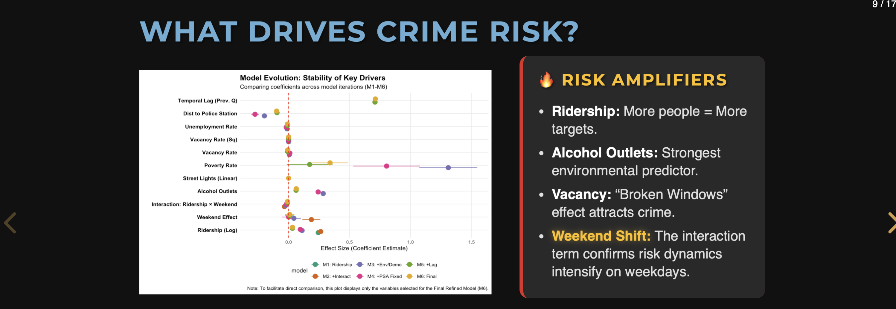

Projects

Street-View Walkability AI
A computer vision pipeline for measuring pedestrian experience using Google Street View images, semantic segmentation, and LLMs.

Cuisine Influence Index
Quantifying neighborhood food culture using Yelp data, ACS indicators, and spatial clustering.

Housing Price Modeling
Comparative analysis of OLS, spatial lag, and GWR models for urban housing markets.

Safe Passage: Modeling Crime Risk around SEPTA Bus Stops
Investigates the complex relationship between transit ridership and public safety around SEPTA bus stops in Philadelphia.